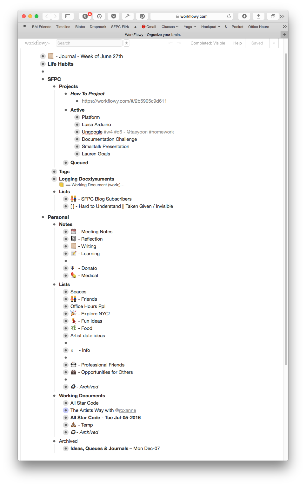

Workflowy Images
Jul 23, 2016WorkFlowy Images
I made a Chrome Extension (and Tampermonkey script) to embed images into your WorkFlowy!
GitHub
Go Checkout the GitHub repository now → or download the Chrome Extension.
Public Service Announcement
Two Things
1) WORKFLOWY IS AMAZEBALLS!
Please use WorkFlowy to be more productive. The only reason you shouldn't use WorkFlowy is because you're an OG who uses Emacs org mode (I tried and failed to pass the emacs barrier... some day...)
Just to give you a brief taste of how I use it, here is a screenshot of the root directory of my WorkFlowy:

2) It works AMAZINGLY with the most effective productivity system I've ever found
Note: Those who know me well know the magnitude of what it means for Jonathan to say that something is the most effective productivity system)
My former colleague, Zach Latta told me about this productivity system written about on Hacker News he discovered on Hacker created by Drew Crawford.
This is the number 1 most useful productivity tip I've ever found and I've been developing my own version of it ever since. I'll write a blogpost about how I do this eventually...